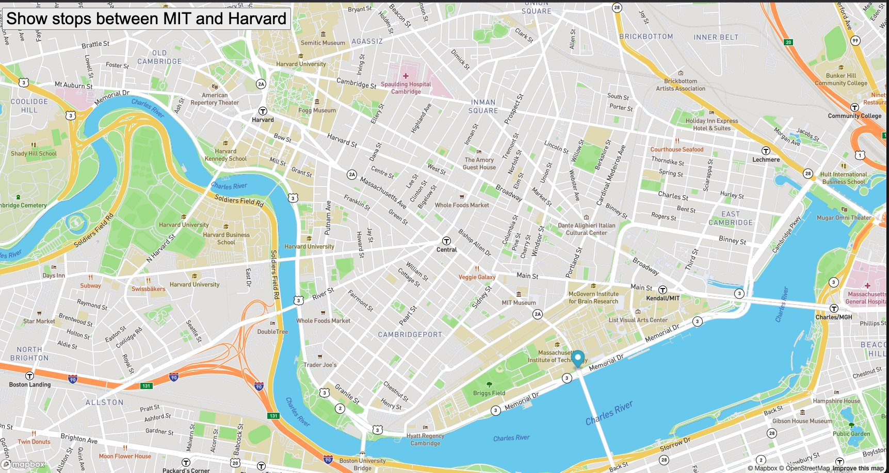

About me:
I am a Mexico City native living in the Bay Area. I am extremely proud of the progress I have made thus far and I am excited for what is to come on my programming journey.
I would like to give a special shout out to MIT x Pro for breaking down the fundamentals of programming switfly and to the professors Abel and John for their work.
when I am not coding I am at the gym or spending quality time with friends and family.
Below is a few of the projects that I have completed with MIT x Pro. The best method to contact me is via linkedIn!
Check out my github account here
PacMen Exercise:

In this project we learned how to create images on demand using javascript, so when the on click event "make one" is pressed, a new pacmen is created and is given a random velociy and position, and moving the pacmen using a forEach function that updates its position on the x and y axis every 20ms.
Finally, we detect collision, allowing the pacmen to stay within the browser window.
Real Time Bus Tracking Project:

This project brings real time data from the API mapbox, allowing us to edit the map using its coordinates and our own understanding of CSS and more importantly using logic to iterate among a list of coordinates of the stops from the MIT to HARVARD campus.
We created a marker at the first stop and as we iterate along the array of coordinates, we create a new marker on the map until we reach the last index of the stops array.
Eye Exercise:

In this project we focused on the incorporation of css, html and javascript - all working together to have a set of eyes follow the user's mouse.